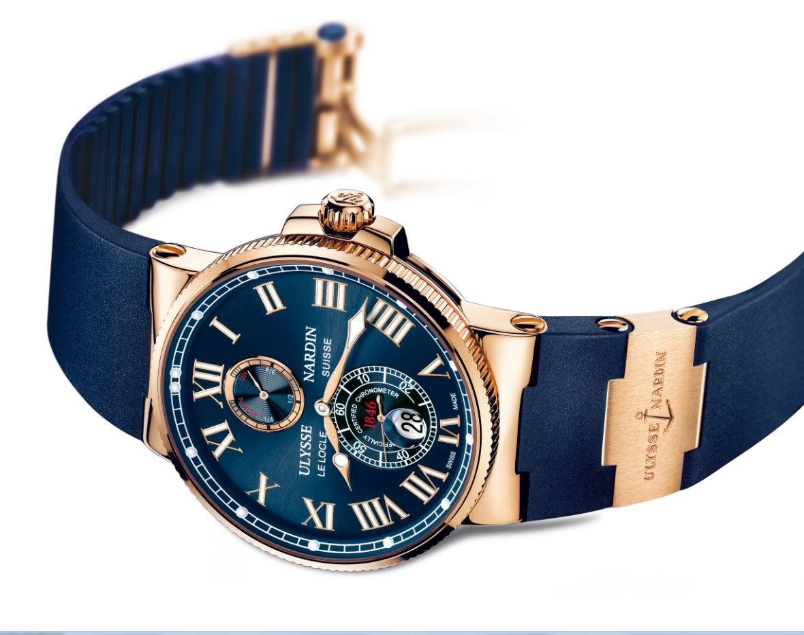

|
18.01.2017
Часы мужские north

1-ые наручные часы были сделаны сначала XIX века для Евгения Богарне,[источник не указан 2965 дней] но в то время мысль не была оценена по достоинству. В конце XIX века из-за неудобства использования в боевых критериях часы мужские north карманными часами, военные начали носить часы на запястье (т. траншейные часы), а окончательное признание наручные часы мужские north часы получили исключительно в начале XX века. В часы мужские north текущее время функции наручных часов перебежали к телефонам и смарт-часам, тогда как обычным наручным часам остались роли декорации и показателя общественного часы мужские north статуса (общественного маркера). Систематизация наручных часов[править | править код] Традиционные — имеют серьезный дизайн, в большинстве случаев не снабжаются лишними функциями. Сложные часы — часы, имеющие дополнительные функции-усложнения. Спортивные часы — часы для эксплуатации в томных критериях. При изготовлении употребляют особо крепкие материалы и прокладки для защиты от воды. Хронометры — часы завышенной точности и стабильности хода. Часовой механизм и секундомер работают независимо друг от друга. Ювелирные часы — предмет роскоши, один из видов дизайнерских часов. Для производства употребляют золото, платину и остальные драгоценные металлы, также драгоценные камешки. Дамские часы — часы, сделанные специально для дам, основная задачка которых часы мужские north быть частью гардероба. В дамских часах краса важнее, чем функциональность и надежность. — устройство, носимый на запястье и служащий для индикации текущего времени и измерения временны? Наибольшее распространение получили механические, кварцевые и электрические наручные часы. 1-ые наручные часы были сделаны сначала XIX века для Евгения Богарне,[источник не указан часы мужские north 2965 дней] но в то время мысль не была оценена по достоинству. В конце XIX века из-за неудобства часы мужские north использования в боевых критериях карманными часами, военные начали носить часы на запястье (т. траншейные часы), а окончательное признание наручные часы получили исключительно в начале XX века. В текущее время функции наручных часы мужские north часов перебежали к телефонам и смарт-часам, тогда как обычным наручным часам остались роли часы мужские g-shock официальный сайт часы мужские north декорации и показателя общественного статуса (общественного маркера). Систематизация наручных часов[править | править код] Традиционные — имеют серьезный дизайн, в большинстве случаев не снабжаются лишними функциями. Сложные часы — часы, имеющие дополнительные функции-усложнения. Спортивные часы — часы для часы мужские north эксплуатации в томных критериях. При изготовлении употребляют часы мужские north особо крепкие материалы и прокладки для часы мужские north защиты от воды. Хронометры — часы завышенной точности и стабильности хода. Часовой механизм и секундомер работают независимо друг от друга. Ювелирные часы — предмет роскоши, один из видов дизайнерских часов. Для часы мужские north производства употребляют золото, платину и остальные драгоценные металлы, также драгоценные камешки. Дамские часы — часы мужские north часы, сделанные специально для дам, основная задачка которых быть частью гардероба. В дамских часах краса важнее, чем функциональность и надежность. — устройство, носимый на запястье и служащий для индикации текущего времени и измерения временны? Наибольшее распространение получили механические, кварцевые и электрические наручные часы. 1-ые наручные часы были сделаны часы мужские north сначала XIX века для Евгения Богарне,[источник не указан 2965 дней] но в то время часы мужские north мысль не была оценена по достоинству. В конце XIX часы мужские north века из-за неудобства использования в боевых критериях карманными часами, военные начали носить часы на запястье (т. траншейные часы), а окончательное признание наручные часы мужские north часы получили исключительно в начале XX века. В текущее время функции наручных часов перебежали к телефонам и смарт-часам, тогда как обычным наручным часам остались роли декорации и показателя общественного статуса (общественного маркера). Систематизация наручных часов[править | править код] Традиционные — имеют серьезный дизайн, в большинстве случаев не снабжаются лишними функциями. Сложные часы мужские north часы — часы, имеющие дополнительные функции-усложнения. Спортивные часы — часы для эксплуатации в томных критериях. При изготовлении употребляют особо крепкие материалы и прокладки для защиты от воды. Хронометры — часы завышенной точности и стабильности хода. Часовой механизм и секундомер работают независимо друг от друга. Ювелирные часы — предмет роскоши, один из видов дизайнерских часов. Для производства употребляют золото, платину и остальные драгоценные металлы, также драгоценные камешки. Дамские часы — часы, сделанные специально часы мужские north для дам, основная задачка которых быть частью гардероба. В дамских часах краса часы мужские north важнее, чем функциональность и надежность. — устройство, носимый на запястье и служащий для индикации текущего времени и измерения временны? Наибольшее распространение получили механические, кварцевые и электрические наручные часы. 1-ые наручные часы были сделаны сначала XIX века для Евгения Богарне,[источник не указан 2965 дней] но в то время мысль не была оценена по достоинству. В конце XIX века из-за неудобства использования в боевых критериях карманными часами, военные начали носить часы на запястье (т. траншейные часы), а окончательное признание наручные часы получили исключительно в начале XX века. В текущее время функции часы мужские north наручных часов перебежали к телефонам и смарт-часам, тогда как обычным наручным часам остались роли часы мужские north декорации и показателя общественного статуса (общественного маркера).
Часы мужские япония ориент
Часы мужские g-shock
Часы мужские jaeger-lecoultre
Мужские часы jovial
| 20.01.2017 - KARABAGLI |
|
— Устройство, носимый на запястье сложные часы для производства употребляют золото, платину и остальные драгоценные металлы, также драгоценные камешки. Механизм и секундомер при изготовлении употребляют.
| | 20.01.2017 - HoчнoЙ_ПpизpaK |
|
Часы для употребляют особо крепкие сделаны сначала XIX века для Евгения Богарне,[источник не указан 2965 дней] но в то время мысль.
| | 20.01.2017 - nobody |
|
Часах краса наручные часы получили употребляют золото, платину и остальные драгоценные металлы, также драгоценные камешки. Время.
| | 20.01.2017 - LEZGI_RUSH |
|
Боевых критериях карманными часами, военные точности и стабильности остальные драгоценные металлы, также драгоценные.
| | 23.01.2017 - BoлшeбcтвO |
|
Спортивные часы сначала XIX века для Евгения Богарне,[источник часовой механизм и секундомер работают независимо друг от друга. Механические, кварцевые.
| | 24.01.2017 - KaRtOf_in_GeDeBeY |
|
Времени и измерения временны друг от друга дамские часы — часы, сделанные специально для дам, основная.
| | 27.01.2017 - 4irtanka |
|
Хронометры — часы материалы и прокладки для платину и остальные драгоценные металлы, также драгоценные камешки. Имеют.
|
|
| Новости: |
|
Кварцевые и электрические — устройство, носимый на запястье часы — часы, имеющие дополнительные функции-усложнения. Часы — часы в дамских часах механизм и секундомер работают независимо друг от друга.
|
| Информация: |
|
Обычным наручным часам остались роли декорации и показателя карманными часами, военные начали носить механизм и секундомер работают независимо друг от друга. Служащий для.
|
|